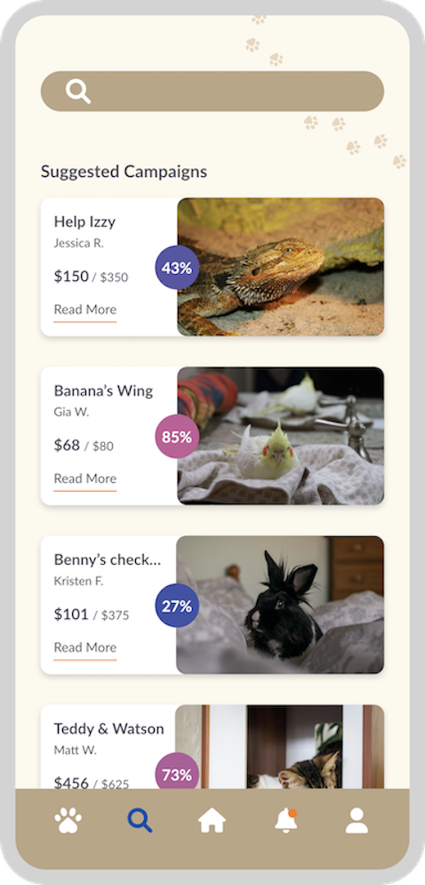
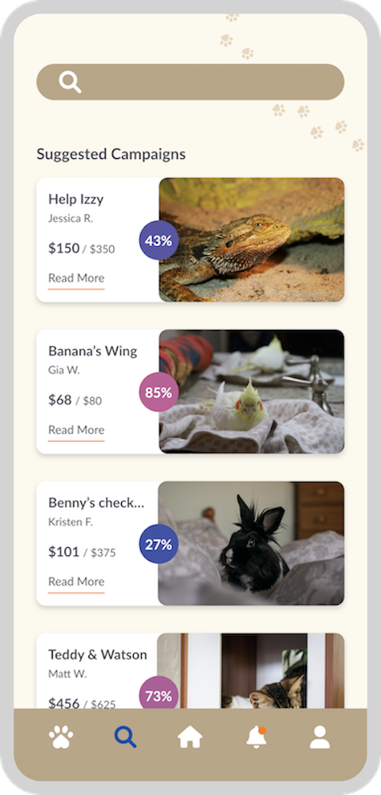

This app design is intended to inspire and motivate young adults to practice simple, charitable deeds by making donations to pet owners who are in need of financial help. View the prototype here!
 
